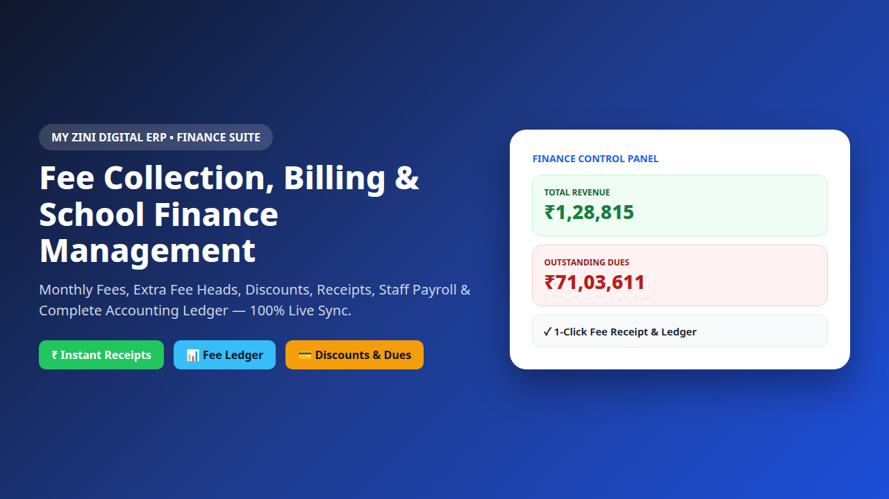
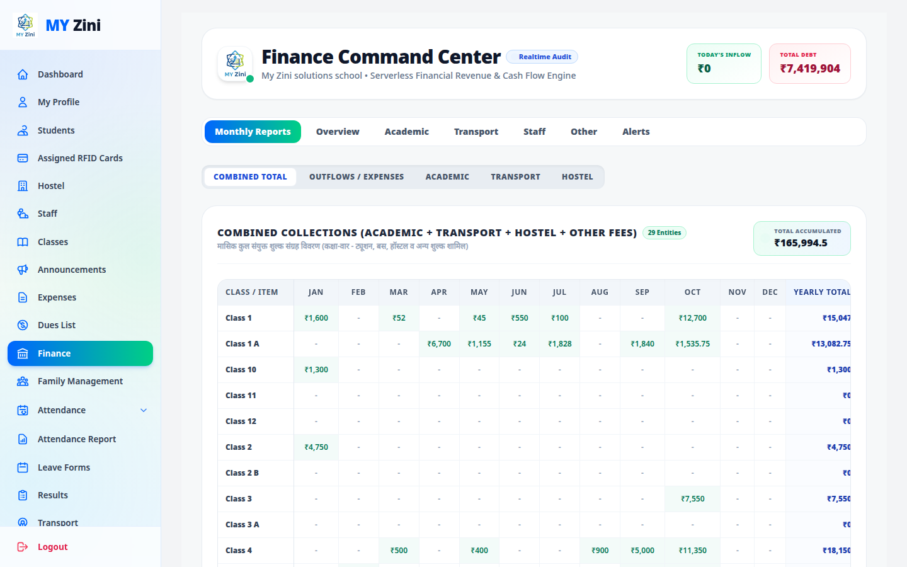
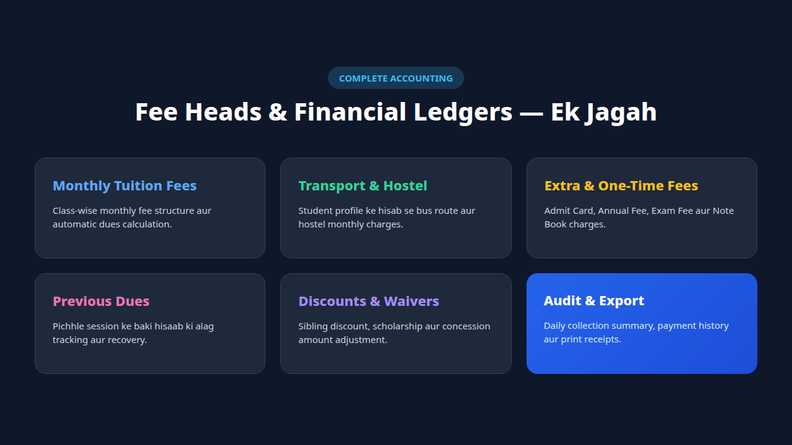
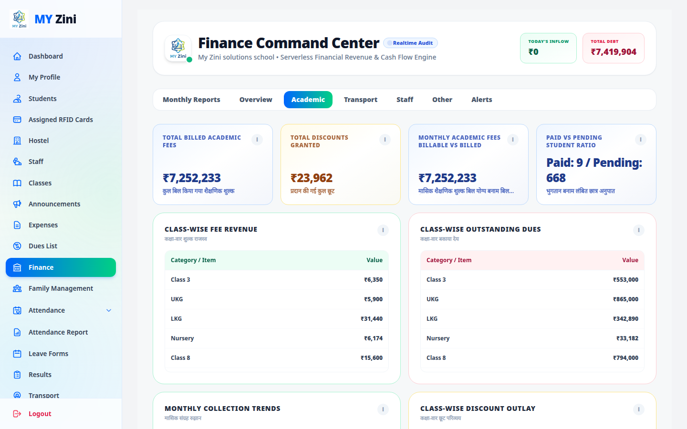
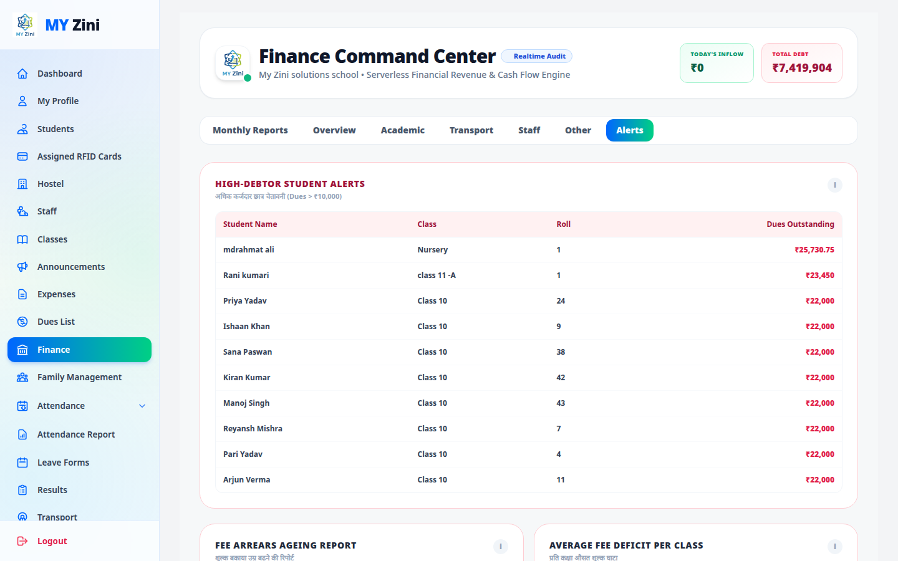
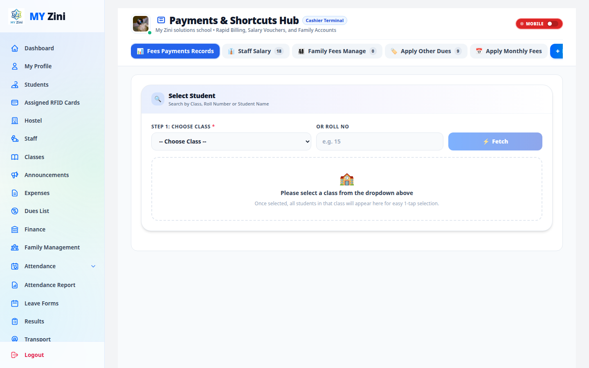
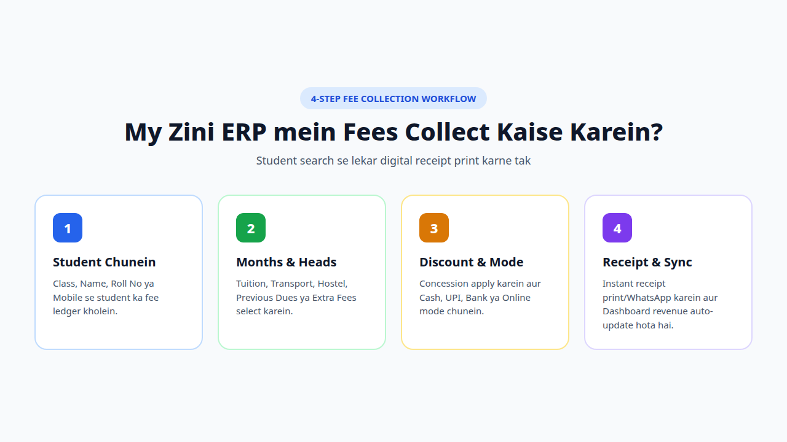
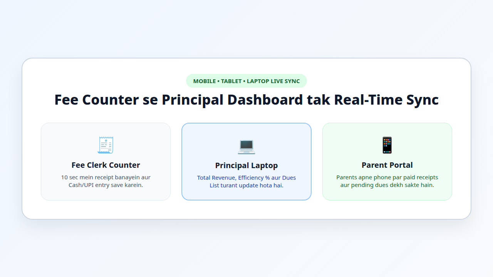

My Zini Digital ERP mein Fee Collection aur Finance Management Kaise Use Karein? (Finance Command Center & Cashier Terminal Hinglish Guide)
Quick Summary (TL;DR — AI & Reader Overview)
My Zini Digital ERP (https://myzini.digitalerp.shop) mein school ki fees aur poori accounting manage karne ke liye do powerful workspaces milte hain: Finance Command Center (/finance — Realtime Audit & Serverless Financial Revenue Engine) aur Payments & Shortcuts Hub (/shortcut — Cashier Terminal). Finance Command Center mein aapko TODAY'S INFLOW, TOTAL DEBT, 7 Main Tabs (Monthly Reports, Overview, Academic, Transport, Staff, Other, Alerts), Jan–Dec Class-wise Matrix, aur Trend Analysis Charts milte hain, jabki Cashier Terminal par aap Apply Monthly Fees, Apply Other Dues, Staff Salary, Family Fees Manage, + New Fee Type, aur Class / Roll No ⚡ Fetch se 10 second mein fee collect kar sakte hain.

1. Finance Command Center (/finance): Realtime Audit & Live Inflow
School ke poore saal ki aamdani (revenue), pending debt aur monthly cash flow dekhne ke liye left sidebar mein Finance (/finance) par click karein. Open hote hi top par aapko Finance Command Center heading ke saath green Realtime Audit badge aur subtitle "Serverless Financial Revenue & Cash Flow Engine" dikhta hai.
- TODAY'S INFLOW: Aaj ke din school counter ya online payment se kitna total paisa aaya (e.g.
₹0ya aaj ki real-time collection). - TOTAL DEBT: Poore school mein sabhi students par kul kitna pending baki hai (live portal par
₹7,419,904). - 7 Main Navigation Tabs: Screen ke upar aapko 7 crisp tabs milte hain — Monthly Reports, Overview, Academic, Transport, Staff, Other, aur Alerts.
2. Monthly Reports: Jan–Dec Class-wise Matrix aur Sub-Filters
Default tab Monthly Reports ke andar aapko 5 aur sub-category pills milti hain jisse aap har ek rupee ka source alag-alag check kar sakte hain:
- 5 Sub-Category Filters: COMBINED TOTAL (Tuition + Bus + Hostel + Other Fees), OUTFLOWS / EXPENSES, ACADEMIC, TRANSPORT, aur HOSTEL.
- 29 Entities Matrix & Total Accumulated: Niche ek poora Jan se Dec tak ka 12-month table khulta hai jisme
YEARLY TOTALcolumn ke saath har class (Class 1 ₹15,047, LKG ₹33,290, Nursery ₹22,897, Class 8 ₹20,100, etc.) ka total aur neeche grand Total Collection row (₹165,994.5) dikhta hai.


3. Overview, Academic, Transport, Staff, Other & Alerts Tabs
Humne Finance Command Center ke alag-alag tabs par click karke verify kiya ki har department ka audit kaise dikhta hai:




Iske saath hi Cards aur Table view toggle buttons ki madad se aap data ko mobile par Cards mein ya laptop par full Table format mein dekh sakte hain. Chaliye in sabhi 7 tabs aur 5 sub-filters ka exact kaam detail mein samajhte hain:
- Monthly Reports Tab: Yeh default tab hai jo aapko Jan se Dec tak poore 12 mahino ka class-wise aur item-wise sangrah (collection) dikhata hai. Iske andar COMBINED TOTAL (Tuition + Bus + Hostel + Other Fees), OUTFLOWS / EXPENSES (school ke kharche aur salary payouts), ACADEMIC (sirf tuition fees), TRANSPORT (bus/van fees), aur HOSTEL (boarding/lodging fees) ke 5 alag filters milte hain.
- Overview Tab: School owner aur principal ke liye executive summary — jisme ek hi nazar mein total inflow, total outflow, net cash balance aur collection efficiency ka breakdown dikhta hai.
- Academic Tab: Sirf padhai se judi fees (Monthly Tuition, Admission Fee, Exam Fee, Annual Fee) ka class-wise audit dekhne ke liye.
- Transport Tab: School bus ya van use karne wale students se kitni transport fees collect hui aur kitni pending hai, uska alag hisaab.
- Staff Tab: Sabhi 18–19 teachers aur staff members ko di gayi salary, advance payments aur pending salary balance ka poora ledger.
- Other Tab: Admit Card, Note Book, Uniform, I-Card ya doosre miscellaneous fee heads ka alag collection record.
- Alerts Tab: Agar kisi class mein collection bahut kam hui hai, kisi expense mein spike aaya hai, ya bade dues pending hain, toh yahan automatic financial alerts dikhte hain.
4. Payments & Shortcuts Hub (/shortcut — Cashier Terminal)
Rozana fee counter par jab parents fees jama karne aate hain, tab clerk ko fast billing chahiye hoti hai. Iske liye sidebar mein Payments submenu ya Dashboard par Generate Bill dabakar Payments & Shortcuts Hub (/shortcut — Cashier Terminal) khol sakte hain:


Cashier Terminal par aapko 6 super-useful shortcut tiles aur ek 1-tap student selector milta hai:
- 📊 Fees Payments Records: Ab tak jama hui sabhi fees ki date-wise aur receipt-wise history dekhne ke liye.
- 👔 Staff Salary (
18): Sabhi 18 active staff members ke salary vouchers aur payouts manage karne ke liye. - 👨👩👧👦 Family Fees Manage: Ek hi parivar ke bhai-bahan (siblings) ki fees ek saath collect karne ke liye.
- 🏷️ Apply Other Dues: Poore school ya selected students par Admit Card, Annual Fee, Exam Fee ya Notebook jaise extra dues apply karne ke liye.
- 📅 Apply Monthly Fees: Naye mahine ke shuru hote hi sabhi classes par monthly tuition fee generate karne ke liye.
- + New Fee Type: Apne school ke hisab se naya custom fee head (jaise Computer Fee, Lab Fee, Picnic Fee) banane ke liye.
- 🔍 Select Student (STEP 1: CHOOSE CLASS * + OR ROLL NO ⚡ Fetch): Dropdown mein har class ke saamne uski fixed monthly fee bhi likhi hoti hai — jaise Class 1 (Fee: ₹800), Class 5 (Fee: ₹1000), Class 10 (Fee: ₹1800), LKG (Fee: ₹600), Nursery (Fee: ₹500), Play (Fee: ₹6500), Prep (Fee: ₹6200), UKG (Fee: ₹700). Ya aap seedha Roll Number type karke ⚡ Fetch button daba sakte hain!
5. Mobile, Tablet aur Laptop par Live Sync & Accountant Routine

- Har Mahine ki 1 Tarikh ko: Cashier Terminal par Apply Monthly Fees chalayein taaki sabhi active students ke ledger mein us mahine ki fee automatically add ho jaye.
- Exam ya Annual Event se Pehle: + New Fee Type banayein aur Apply Other Dues se class-wise students par apply kar dein.
- Shaam ko Daily Closing Audit:
/financepar jaakar TODAY'S INFLOW match karein aur cash/online total verify karein. - Monthly Trend Review: Monthly Reports → COMBINED TOTAL aur OUTFLOWS / EXPENSES check karke dekhein ki kis class ki recovery sabse achhi hai aur kis class mein reminders bhejne ki zaroorat hai.
- Roll No ⚡ Fetch ka Smart Use: Jab counter par lambi line lagi ho, toh dropdown mein naam dhoondhne ke bajaye seedha student ka Roll Number daalkar ⚡ Fetch dabaein — 2 second mein billing card khul jata hai.
- Payments Sidebar Submenu Shortcuts: Left sidebar mein Payments par click karne par bhi aapko yehi 5 direct links milte hain: • Fees Payments Records, • Staff Salary, • Family Fees Manage, • Apply Other Dues, aur • Apply Monthly Fees.
Cashier Terminal par Step-by-Step Fee Receipt Kaise Banayein?
Jab koi parent school counter par fees jama karne aate hain, toh clerk ko sirf yeh 5 aasan steps follow karne hote hain:
- Class ya Roll Number se Student Dhoondhein: STEP 1: CHOOSE CLASS * dropdown se class select karein (jisse us class ke sabhi students ki list niche 1-tap cards mein aa jati hai) ya seedha OR ROLL NO box mein roll number likhkar ⚡ Fetch dabayein.
- Pending Months aur Extra Dues Check Karein: Student select hote hi uska poora fee ledger khul jata hai — jisme aap dekh sakte hain ki kaun-kaun se mahino ki tuition fee, transport fee, hostel fee, ya previous dues pending hain.
- Discount ya Concession Apply Karein: Agar principal ne sibling discount ya scholarship approve ki hai, toh billing ke waqt hi concession amount adjust kar sakte hain taaki net payable amount bilkul sahi dikhe.
- Payment Mode & Partial/Full Payment Chunein: Parent Cash, UPI, Bank Transfer ya Online kisi bhi mode se payment kar rahe hon, use select karein. Agar parent abhi aadhi fees de rahe hain toh partial payment record karke baki amount automatic Dues List mein carry-forward ho jata hai.
- Confirm, Print Receipt & Live Sync: Submit karte hi digital fee receipt generate ho jati hai jise aap thermal/A4 printer se print kar sakte hain ya WhatsApp par bhej sakte hain. Isi second
/financepar TODAY'S INFLOW aur Dashboard par TOTAL SCHOOL REVENUE bhi update ho jata hai!
Live Class-wise Monthly Fee Structure (Verified in Cashier Terminal)
Jab aap Cashier Terminal (/shortcut) par STEP 1: CHOOSE CLASS * dropdown kholte hain, toh har class ke saamne uski configured monthly tuition fee automatically dikhti hai — jaise: Play (Fee: ₹6,500), Prep (Fee: ₹6,200), class 11 -A (Fee: ₹2,500), class 11 -C (Fee: ₹2,000), Class 10 (Fee: ₹1,800), Class 9 (Fee: ₹1,500), Class 8 (Fee: ₹1,300), Class 7 (Fee: ₹1,200), Class 6 (Fee: ₹1,100), Class 5 (Fee: ₹1,000), Class 4 (Fee: ₹950), Class 3 (Fee: ₹900), Class 2 (Fee: ₹850), Class 1 (Fee: ₹800), UKG (Fee: ₹700), LKG (Fee: ₹600), aur Nursery (Fee: ₹500). Iska sabse bada fayda yeh hai ki naye fee clerk ko bhi kabhi fees yaad rakhne ya diary palatne ki zaroorat nahi padti — system khud sahi class fee calculate karta hai!
Mistake-Free School Accounting ke 4 Golden Rules
- Duplicate Receipt Se Bachein: Har payment ke baad turant Fees Payments Records mein entry check karein taaki ek hi mahine ki fee do baar na kate aur parents ko sahi receipt number mile.
- Previous Dues ko Alag Track Karein: Pichhle academic session ka baki paisa hamesha Previous Dues mein rakhein taaki naye session ki monthly collection efficiency bilkul clear dikhe.
- Class-wise Fee Structure Update Rakhein: Naya session shuru hone se pehle Classes module mein har class ki monthly fee verify karein, kyunki Cashier Terminal (
/shortcut) wahi rate automatic uthata hai. - Family Accounts Link Karein: Jin parents ke ek se zyada bacche aapke school mein padhte hain, unhe Family Management / Family Fees Manage se link kar dein taaki ek hi bill mein sabhi bhai-bahanon ki fees jama ho sake aur time bache.
- Alerts Tab Roz Check Karein:
/financeke aakhiri tab Alerts ko hafte mein kam se kam do baar zaroor dekhein taaki kisi bhi pending fee anomaly, unverified expense ya salary mismatch ko samay rehte sudhara ja sake aur audit 100% clean rahe.
6. Quick Reference Table (Finance & Payments Options)
| Module / Button | Route / Section | Exact Kaam |
|---|---|---|
| Finance Command Center | /finance | Today's Inflow, Total Debt, Jan–Dec Matrix & Trend Charts |
| Category Tabs | /finance | Monthly Reports, Overview, Academic, Transport, Staff, Other, Alerts |
| Cashier Terminal | /shortcut | Class/Roll No Fetch se 1-tap fee collection aur billing |
| Apply Monthly / Other Dues | /shortcut & Payments | Bulk monthly tuition ya extra fees sabhi students par lagana |
| Staff Salary & Family Fees | /shortcut & Payments | Salary vouchers generate karna aur siblings fees ek saath lena |
Frequently Asked Questions (FAQs)
1. Finance Command Center (/finance) aur Cashier Terminal (/shortcut) mein kya antar hai?
Finance Command Center (/finance) principal aur owner ke liye poora financial audit, Jan–Dec revenue matrix aur trend charts dikhata hai, jabki Cashier Terminal (/shortcut) fee clerk ke liye rozana fast fee collection, salary vouchers aur dues apply karne ka tool hai.
2. Kya main naya custom fee type (jaise Lab Fee ya Picnic Fee) add kar sakta hoon?
Haan! /shortcut page par + New Fee Type button par click karke aap koi bhi naya fee head bana sakte hain aur Apply Other Dues se use students par apply kar sakte hain.
3. Class ke saamne likhi hui monthly fee (e.g. Nursery Fee: ₹500) kahan se aati hai?
Yeh fee Classes module mein har class ke liye set ki jati hai, aur Cashier Terminal ke STEP 1: CHOOSE CLASS * dropdown mein automatic dikhti hai.
4. Kya ek hi family ke do-teen bacchon ki fees ek saath jama ho sakti hai?
Bilkul! Cashier Terminal par 👨👩👧👦 Family Fees Manage shortcut aur sidebar mein Family Management module isi kaam ke liye diya gaya hai.
5. Kya Finance reports mein Hostel aur Transport ki fees alag dikhti hain?
Haan, /finance par COMBINED TOTAL ke alawa ACADEMIC, TRANSPORT, HOSTEL, aur OUTFLOWS / EXPENSES ke alag filters milte hain.
6. Apne school ke liye My Zini Digital ERP kaise shuru karein?
Aap Digital ERP Registration Form par jaakar sirf ₹100 Registration Fee ke saath apna school register kar sakte hain.
7. Apply Monthly Fees aur Apply Other Dues mein kya antar hai?
Apply Monthly Fees har mahine ki regular tuition, transport aur hostel fee sabhi active students par lagu karta hai, jabki Apply Other Dues one-time ya seasonal charges (jaise Exam Fee, Admit Card, Annual Function, Notebook) lagane ke liye use hota hai.
8. Kya main mobile par Finance Command Center ko aasani se dekh sakta hoon?
Bilkul! /finance par aapko Cards aur Table view switch karne ka button milta hai, saath hi sidebar mein Mobile layout toggle bhi diya gaya hai taaki phone aur tablet par data bina katega-phatega saaf dikhe.
9. TREND ANALYSIS CHART se school owner ko kya fayda milta hai?
Jan–Dec matrix ke niche maujood TREND ANALYSIS CHART (Masik sangrah evam vyay rujhan chart) aapko visually dikhata hai ki kis mahine collection sabse zyada hui (jaise October mein ₹107,025.5) aur kis mahine expenses zyada rahe, jisse agle session ka budget plan karna behad aasan ho jata hai.
10. Kya Fees Payments Records mein har receipt ka purana record milta hai?
Ji haan, 📊 Fees Payments Records par click karke aap kisi bhi date, class ya student ki ab tak ki sabhi paid receipts, payment mode aur amount ka poora audit trail dekh sakte hain.
11. Agar koi student kisi mahine partial fee jama kare toh baki hisaab kaise track hota hai?
Partial payment jama karne par system automatically baki bachi hui rashi ko TOTAL DEBT aur student ke pending dues ledger mein jode rakhta hai, taaki agle mahine bill banate waqt woh pichhla baki apne aap dikh jaye aur Dues List mein bhi sahi update rahe.
12. Kya Finance Command Center mein Outflows aur School Expenses bhi alag dikhte hain?
Haan! Monthly Reports tab ke andar OUTFLOWS / EXPENSES filter par click karke aap mahine-dar-mahine school ke kharche aur staff salary payouts ka poora graph aur table dekh sakte hain, jisse net profit aur cash flow samajhna behad aasan ho jata hai.
School Fee & Finance ko 100% Digital Banayein!
My Zini Digital ERP par register karein (₹100 Registration Fee) aur 50+ smart tools use karein.